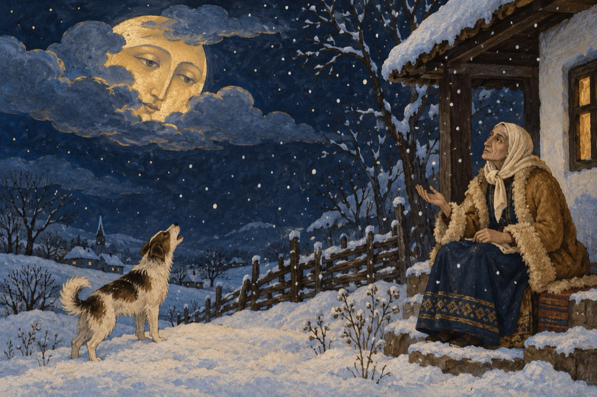

Serial cosmic – 49
BABA DOCHIA
Cum stătea baba-ntr-o doară,
Numărând fulgii de nea,
Neghicind de-i primăvară,
Sau că iarnă s-ar mai vrea,
Ura-n ea mereu creștea.
Ura câinele că latră
Către luna de sub nori,
Și că focu-i stins în vatră
Și că are trei nurori.
Două sunt la casa lor
Făcând tot ce ele vor,
Însă-a treia e mai rea
Și s-o piardă ea ar vrea.
Du-te curăță-n copite
Armăsarul nărăvaș,
La picioarele din spate
Și la porc, sârma din nas.
Nora dreaptă, ea, drăguța,
Într-un suflet alerga
Și, tot ce-i spunea băbuța,
Pe loc le îndeplinea.
Toate le-am făcut, mămucă,
Și de vrei, le mai pot face,
Dară am o mică rugă:
Între noi să fie pace.
Vasile Groza